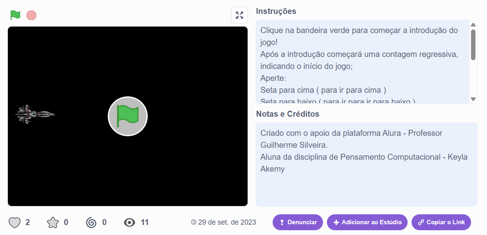
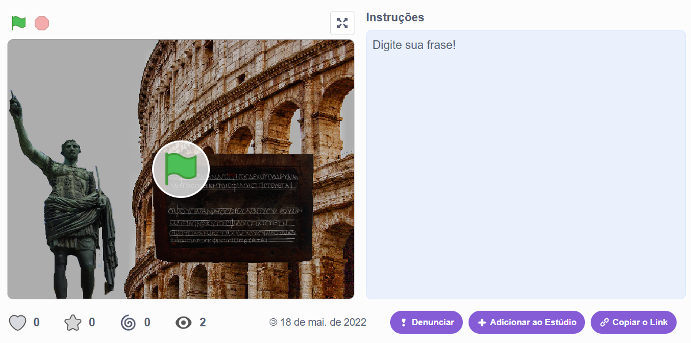

Meus projetos

Jogo da Nave
É um jogo que desenvolvi enquanto frequentava o curso extra curricular Eduthc, o jogo envolve naves e invsadores tentando chegar à Terra.

Cripitografia de César
Esse jogo possui um código para criar a sua propría criptográfia ou utilizar a que já está lá. a famosa criptografia de Julho César.

Medidas da Receita
Nesse “jogo” você consegue multiplicar ou dvidir a sua receita e seus ingredientes para conseguir a quantidade desejada.